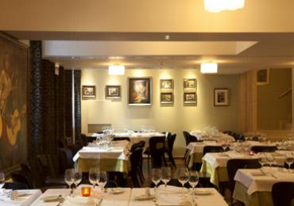
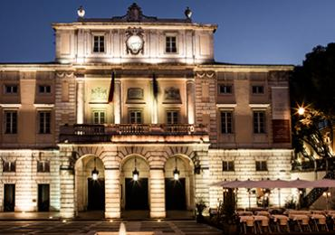
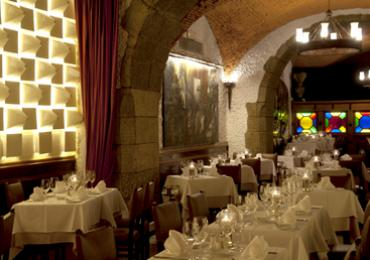
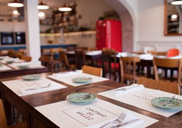
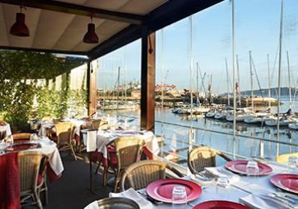
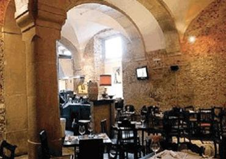
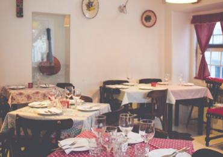
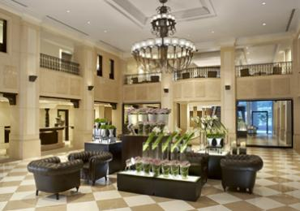
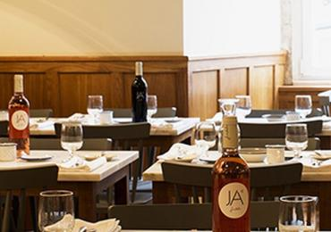
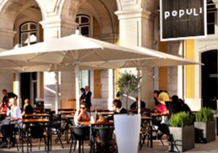

|  | Café Buenos Aires Calçada Escadinhas do Duque No. 31, +351 21 3420739. A good and selected combination of cheap and mid range dishes. The owners are very friendly and speak English, as well as Portuguese. (It is a good restaurant if you want to eat South American grilled meat.) |
|  | Mestiço Arco das Portas do Mar, 9 (Near Casa dos Bicos), 963660756. What used to be a Nepalese curry house is now a very friendly African eatery with authentic food. In the evening musicians play for an even more atmospheric setting. Very reasonably priced - total of about about 8-12 euros per person. |
|  | Mercado da Ribeira Cais do Sodre (Opposite the train station, on the Marginal). 10am - late. The west wing of this market is a food hall run by Time Out Lisboa, with around 30 dining outlets. There is a large selection of seafood, gastronomic dishes, desserts, and of course wine to choose from. Meals for 6-15 euros. |
|  | Chapito Dinner: from 7:30pm. Great views are the main feature if you reserve terrace seat in advance. Good atmosphere; international-menu food is tasty but nothing special. |
|  | Pois Cafe Rua S. João da Praça N. 93-95 (on the side street of cathedral Sé),+351 (21) 886-2497 (pois@poiscafe.com). 11am-8pm, Tue-Sun. It's a place to relax, read a book, drink a coffee and plan you way around Lisbon. Also offers toasts, pastas, quiches and salads; features (late) breakfasts. |
|  | Os Tibetanos Rua do Salitre, 117, Lisboa, +351-213142038, Monday to Friday 12h15 to 14h15 and 19h30 to 22h00, Saturday 12.45h to 15h and 20h to 22.30h, closed Sunday. Vegetarian restaurant affiliated with a Buddhist center. Vegan friendly. Juice bar. Inexpensive. |
|  | Terra Rua da Palmeira 15 (near Jardim do Príncipe Real),+351 707 108 108. Probably the best vegetarian restaurant in Lisbon and also the nicest in terms of ambiance and service. They have a menu in English and will help with vegan choices or people with other dietary restrictions. Reservations are recommended, especially on weekends but you will always be served even if you arrive with the place full and have to wait for a while. Weather permitting try to get a table "outside", which means a wonderful and secluded back terrace. €15-20 (Vegetarian Buffet plus drink and/or dessert). |
|  | Brasuca Rua Joao Pereira da Rosa 7, +351 (21) 322-07 40. Great Brazilian food served by friendly staff. |
|  | Ali a Papa Rua da Atalaia 95, +351 (21) 347-4143. Dinner only: 7pm-4am. Mediocre quality and rude service, but has veggie options. €20 (two courses with house wine). |
|  | Bengaltandoori Rua de Algeria, 23, +351 (21) 347 99 18 (info@bengal.pt). Bengal tandoori is an excellent place for Indian dinning in Lisbon. the staff is very friendly and the restaurant is very romantic and they lit candle nights on the tables. €30 (appetizer, main, wine and desert). |